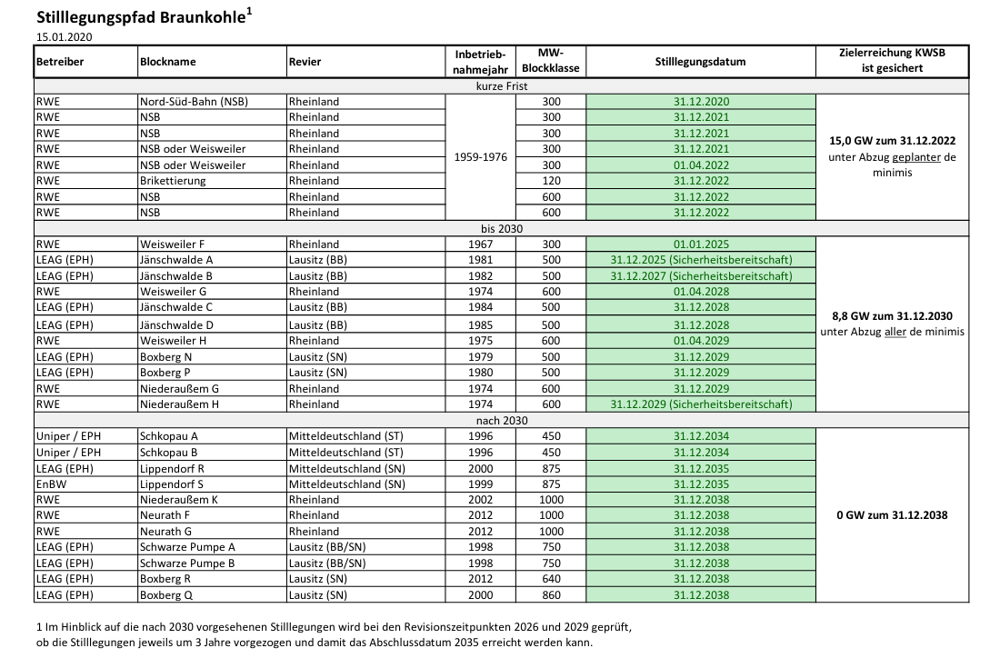

|
Kohleausstieg Recherche zum Kohleausstieg Stand der Recherche 2020-03-24 Der sog. “Stilllegungspfad” für die Braunkohle mit Veröffentlichung am 15.01.2020 listet mit exakter Datierung die jeweiligen Kraftwerkstilllegungen auf eine übersichtliche Abhandlung zum Kohleausstieg und Strukturwandlung gibt es vom BMWi hier Für die Stilllegung von Steinkohlekraftwerken sind bis 2026 Ausschreibungen vorgesehen. Eine detaillierte Liste für Steinkohlekraftwerke gibt es also (noch) nicht. Wohl jedoch werden diese vom BMWi in deren Monitoring abgefragt. Die Kraftwerkbetreibenden geben also selbstständig (und freiwillig?) an, wann das Werk vom Netz geht. Auf dieser Grundlage gibt es eine umfassende Liste (fossil-thermischer Kraftwerke in Deutschland) auf Wikipedia, anhand derer man Quellen prüfend eine Übersicht erstellen könnte. Datengrundlage Convenctional Power Plants - List of conventional power plants in Germany and European countries Recherche Kraftwerksstilllegungsanzeigen der BNetzAG: führt (auf Basis von bei der BNetzAG eingangenen Stilllegungsanzeigen) Kraftwerke und -blöcke mit Nennleistung (und Systemrelevanz) auf. Stilllegungsanzeigetypen: geplant vorläufig, geplante endgültige Stilllegung, endgültig stillgelegt ‒ Stand 2020-01-17, leider ohne Termine Gesetzentwurf zur Reduzierung/Beendigung der Kohleverstromung - 2020-01-29 Zur Reduzierung und Beendigung der Braunund Steinkohleverstromung in Deutschland schlägt die Kommission WSB vor, die deutschen Kohlekraftwerke schrittweise in einem Umfang stillzulegen oder umzurüsten, sodass die Leistung der Kohlekraftwerke im Jahr 2022 auf rund 15 Gigawatt (GW) Steinkohle und 15 GW Braunkohle und im Jahr 2030 auf höchstens acht GW Steinkohle und neun GW Braunkohle reduziert wird und die Verstromung von Kohle spätestens im Jahr 2038 endet BNetzAG Die Bundesnetzagentur und das Bundeskartellamt haben nach dem Energiewirtschaftsgesetz (EnWG) bzw. dem Gesetz gegen Wettbewerbsbeschränkungen (GWB) den Auftrag, ein Monitoring in den Bereichen Elektrizität und Gas durchzuführen. Bundesnetzagentur und Bundeskartellamt werden daher vom 23. März bis zum 02. Juni 2020 Daten zum Monitoring 2020 erheben. BMWi Erzeugung:
 BMWi zur “Kohlekommission” https://www.bmwi.de/Redaktion/DE/FAQ/Kohlekommission/faq-kohlekommission.html Liste verwendeter Suchbegriffe (teileweise auch Google-Suchvorschläge verwendet..) Stilllegung Kohlekraftwerk? Termin? |